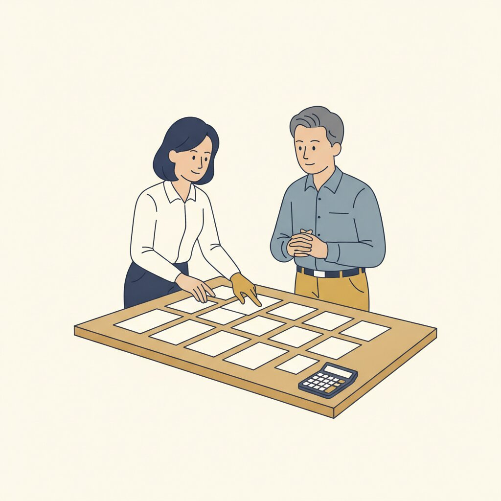
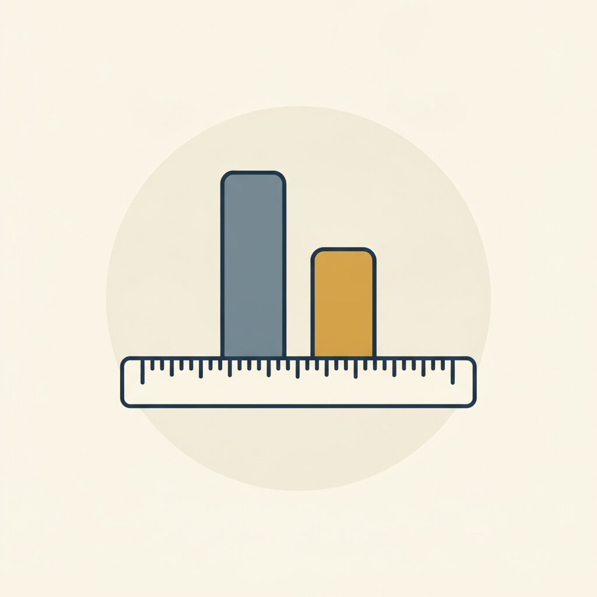
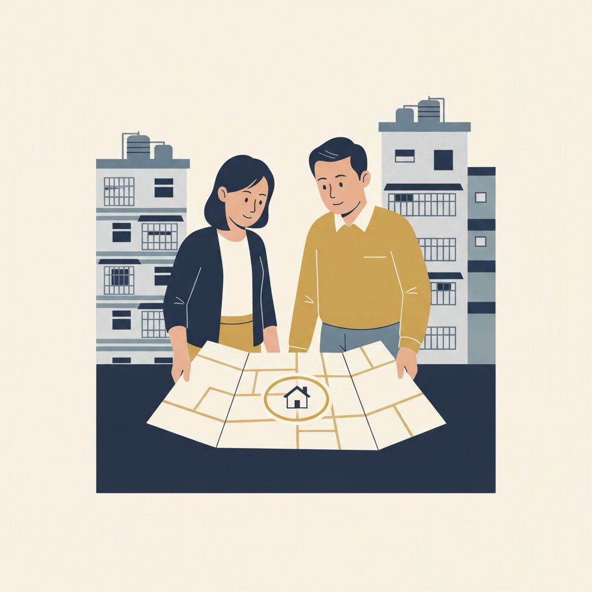
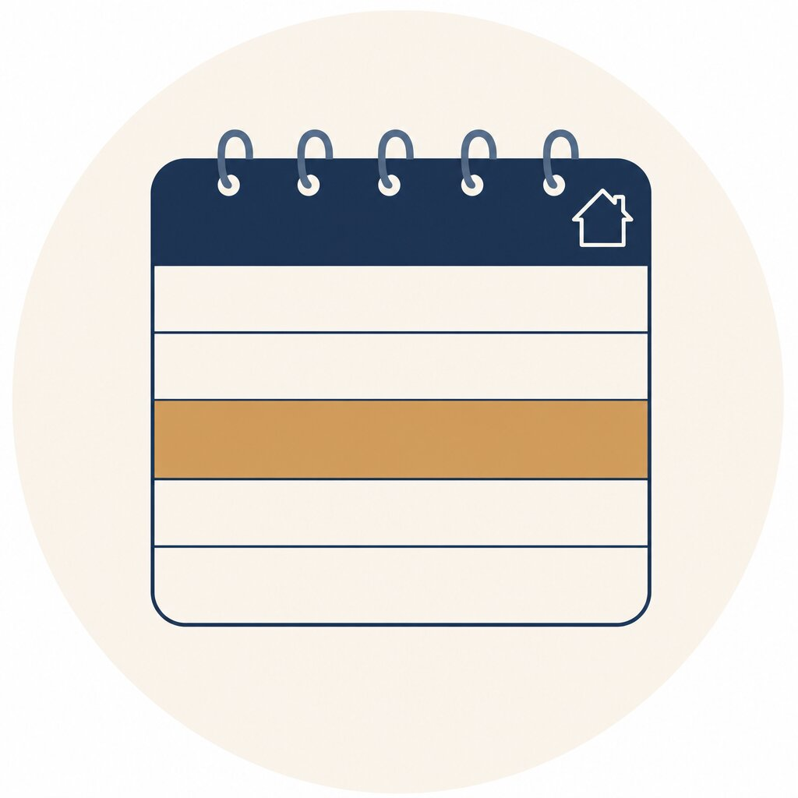
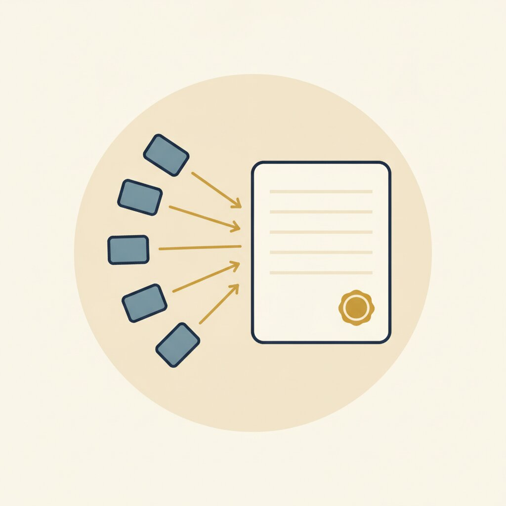

新北中和的屋主，名下有房。身上不是一筆借款，是好幾筆，全是民間，年利率 15% 到 24% 不等（月息約 1.25% 到 2%）。每個月合計約繳 14.5 萬。
繳得出來，所以一直繳。多數民間合約只收利息，本金不動；繳的每一塊錢都在買下個月，沒有一塊錢在買結束。

餘額、利率、月付、有沒有設定、何時到期，全部放在同一張桌上。多筆負債最可怕的不是金額，是從來沒人把它們放在一起看過。

民間講月息、銀行講年息。月息 1.25% 到 2% 換算年化就是 15% 到 24%，銀行房貸多在 2% 到 3% 區間。同一把尺，才看得出差距。

實價登錄加周邊行情，估這間房子還能撐多少銀行房貸。整合得了多少，是市場和銀行說了算。
月付降，通常是年限拉長，總利息可能反而增加；代書費、開辦費是實際成本；申辦期每次信用查詢都會留紀錄，所以只鎖定一到兩家送件，不海投。
銀行審文件與負債結構。核可後撥款，直接清償每一筆民間借款，逐筆拿到結清證明。

之後每個月只繳銀行這一筆。

多筆民間借款，變成一筆銀行房貸，年利率 3% 區間。月付從約 14.5 萬變成約 4.5 萬，每月現金流少支出約 10 萬。
這是單一實際核可案例，已匿名，不是通案、也不是承諾。降幅取決於負債結構、不動產條件與銀行審核結果，過往案例多在 30% 到 50% 區間；月付降低通常伴隨年限拉長，總利息支出可能增加。是否適合整合、能整合到什麼程度依個案評估，最終核貸由金融機構決定。
以前繳的大多是利息，本金在原地。現在每一期都有一部分在還本金。
鋮馨不是銀行、不是金融機構、不放款。我們把負債盤點清楚、用同一把尺試算、媒合適合的金融機構。核不核貸、核多少、什麼利率，由金融機構決定。評估後不適合，我們直接說。不申請不收費，面談不收費。
LINE 加 → https://lin.ee/PHIfSoY
電話 → 02-2249-0517 / 0958-139-786
新北市中和區中正路 468 號
不申請不收費，面談不收費。